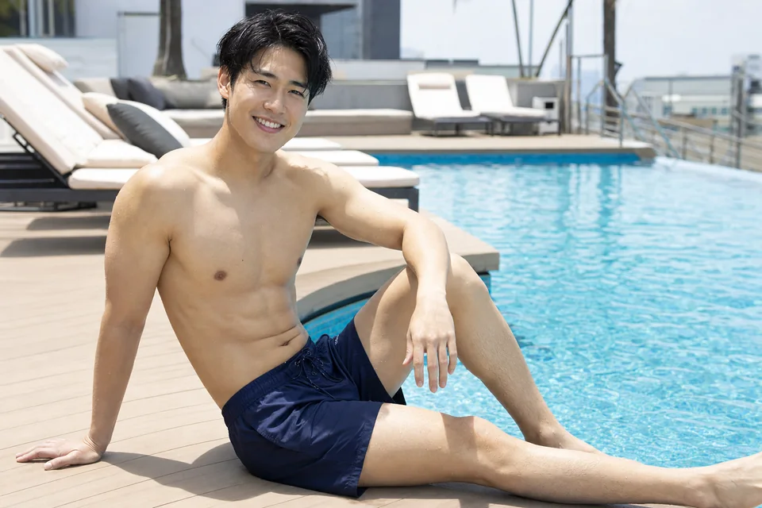

処理方法の比較
| 方法 | 向いている人 | 注意点 |
|---|---|---|
| ボディトリマー | 自然に薄く見せたい | 定期的な処理が必要 |
| 除毛クリーム | 一時的に整えたい | パッチテスト必須 |
| 医療脱毛 | 長期的に減らしたい | 費用と通院が必要 |
短パン前にやるなら
夏前に完全に終わらせるより、まずは見える部分を整えるのが現実的です。時期の考え方は夏までにメンズ脱毛は間に合う？にまとめています。
まとめ
すね毛処理は、清潔感を上げたい男性にとって始めやすい部位です。腕も気になる人は腕毛処理も確認してください。

本記事には広告・プロモーションが含まれる場合があります。
結論：すね毛は全部なくすより、まず長さと濃さを整えるだけでも印象が変わります。短パンやジムで気になる人は、セルフ処理か部位脱毛を検討しましょう。
| 方法 | 向いている人 | 注意点 |
|---|---|---|
| ボディトリマー | 自然に薄く見せたい | 定期的な処理が必要 |
| 除毛クリーム | 一時的に整えたい | パッチテスト必須 |
| 医療脱毛 | 長期的に減らしたい | 費用と通院が必要 |
夏前に完全に終わらせるより、まずは見える部分を整えるのが現実的です。時期の考え方は夏までにメンズ脱毛は間に合う？にまとめています。
すね毛処理は、清潔感を上げたい男性にとって始めやすい部位です。腕も気になる人は腕毛処理も確認してください。